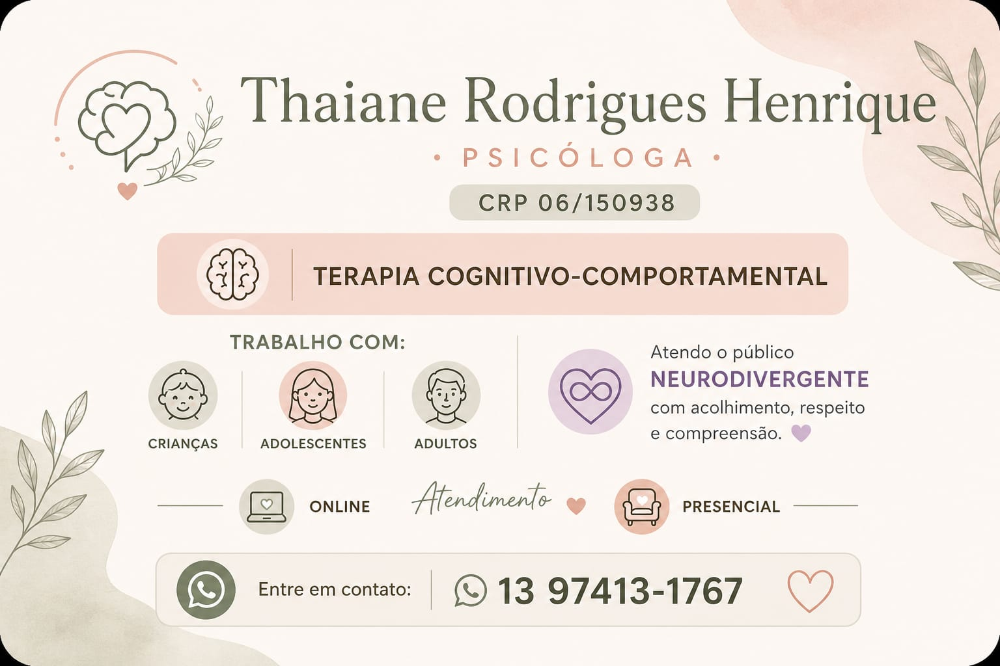
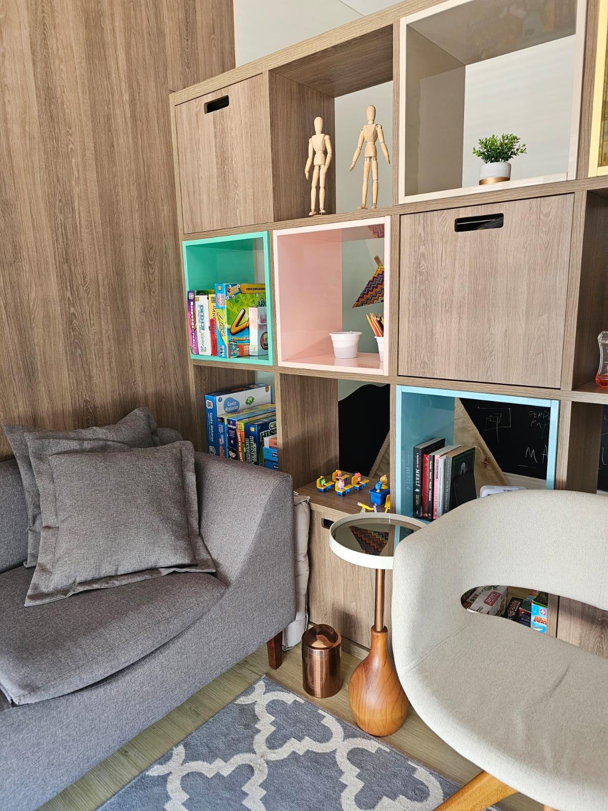
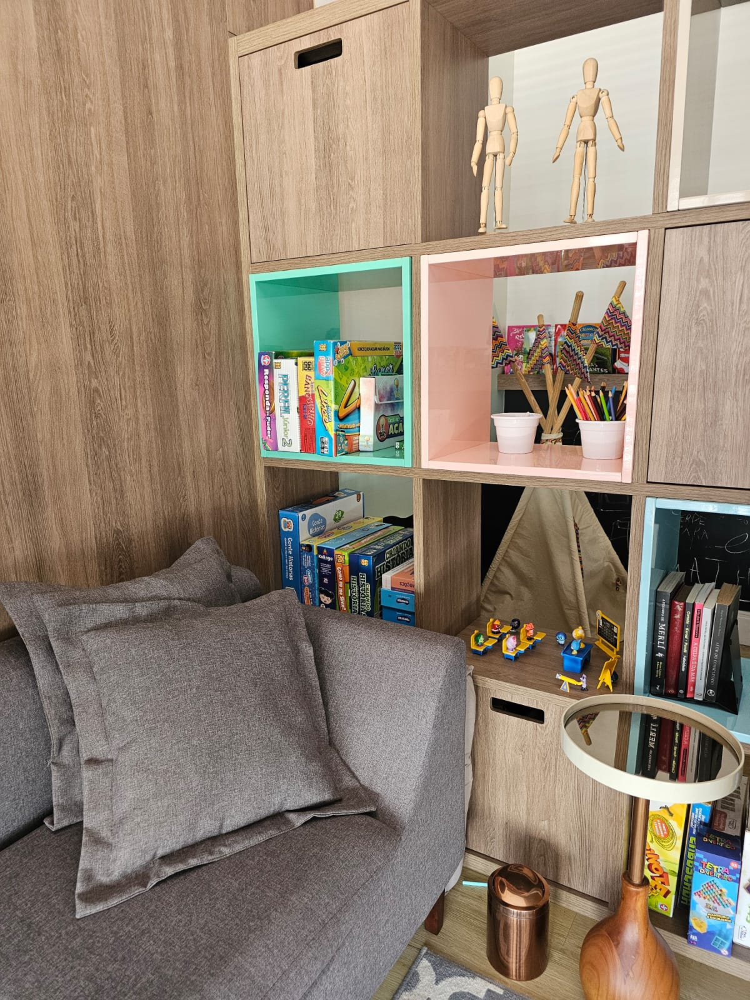
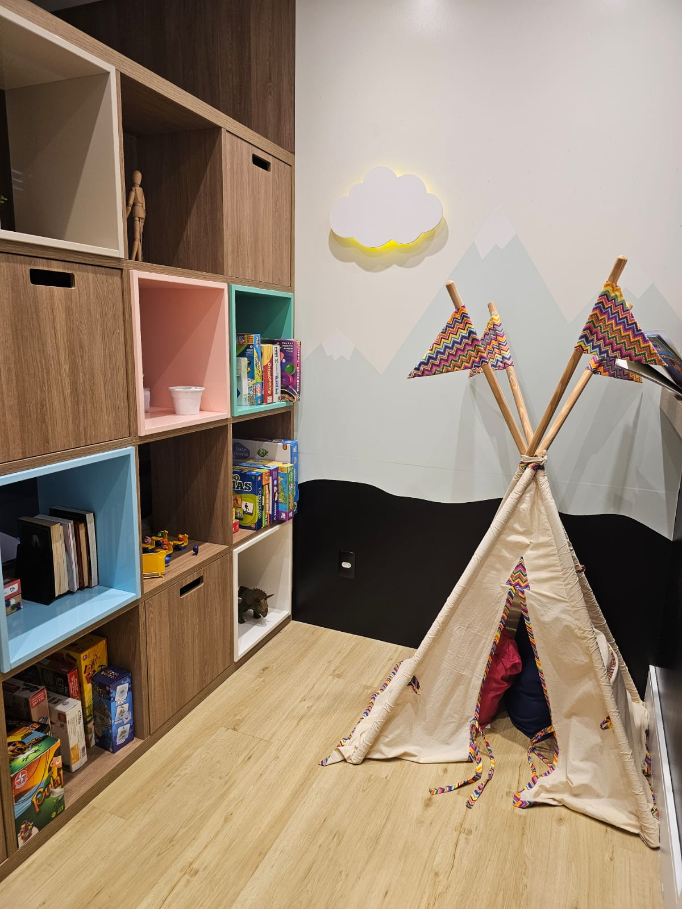
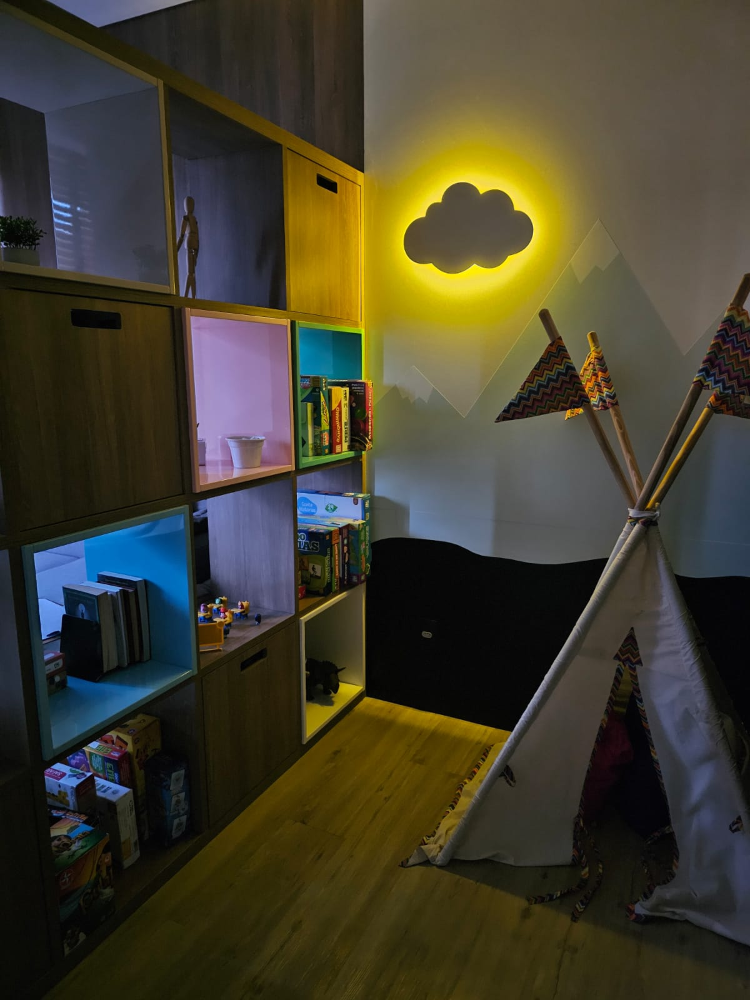

Organização emocional
Nomear emoções, reconhecer gatilhos e desenvolver formas mais saudáveis de lidar com momentos difíceis.
Psicoterapia cognitivo-comportamental
Atendimento para crianças, adolescentes e adultos, com escuta sensível e condução técnica para compreender emoções, fortalecer recursos e construir caminhos possíveis.

Apresentação
Sou psicóloga clínica e trabalho com a Terapia Cognitivo-Comportamental, uma abordagem que ajuda a identificar padrões de pensamento, emoção e comportamento para construir mudanças de forma gradual, responsável e possível.
Meu atendimento é pautado pelo acolhimento, pela ética e pelo respeito à singularidade de cada pessoa. Aqui, o processo terapêutico acontece no seu ritmo, com objetivos construídos em conjunto.
Por que fazer psicoterapia?
Nomear emoções, reconhecer gatilhos e desenvolver formas mais saudáveis de lidar com momentos difíceis.
Entender padrões que se repetem nas relações, nas escolhas e na forma como você se percebe.
Construir estratégias práticas para comunicação, tomada de decisão, limites e resolução de problemas.
Ter um acompanhamento profissional para atravessar mudanças, crises, dúvidas e fases de desenvolvimento.
Como funciona a terapia
Atendimento online e presencial, conforme disponibilidade e necessidade do processo.
Sessões geralmente semanais, com combinados feitos de acordo com cada caso.
Crianças, adolescentes e adultos, incluindo acolhimento ao público neurodivergente.
Objetivos terapêuticos definidos em conjunto, com acompanhamento ético e técnico.
Fotos do espaço




Passo a passo
Começar terapia não precisa ser complicado. O primeiro movimento é entrar em contato, tirar suas dúvidas e entender se esse é o momento certo para você ou para sua família.
Quero iniciarProjetos
Projeto voltado à construção de pontes entre cuidado psicológico, informação de qualidade e acesso a conteúdos que apoiam famílias, crianças, adolescentes e adultos.
@ponteterapeuticaDúvidas
A duração é combinada no contato inicial, de acordo com a modalidade e o tipo de atendimento.
Sim. O atendimento online pode ser uma alternativa segura e efetiva quando há privacidade, conexão adequada e compromisso com o processo.
Você pode procurar terapia em momentos de crise, sofrimento emocional, mudanças importantes ou quando deseja se conhecer melhor e desenvolver recursos para lidar com a vida.
Sim. O atendimento infantil e adolescente considera também o diálogo com responsáveis, sempre respeitando a ética, o sigilo e as necessidades de cada etapa do desenvolvimento.
Por orientação ética, valores são informados em contato direto. Assim, também é possível explicar como o atendimento funciona e entender melhor sua demanda.
Contatos
Entre em contato para tirar dúvidas, verificar horários disponíveis ou iniciar seu processo psicoterapêutico.